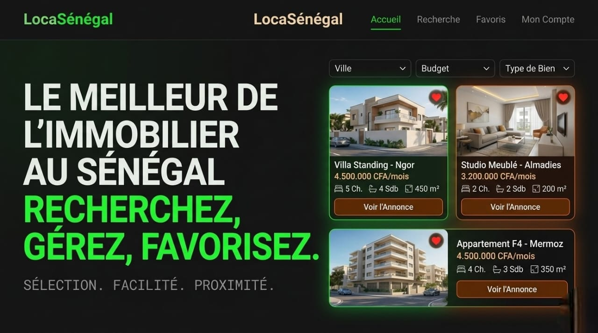

Mon Parcours.
Je m’appelle Abdallah Sow, étudiant passionné par l’informatique, spécialisé dans le développement de solutions logicielles et la conception de systèmes. Je m’intéresse particulièrement à la programmation en langage C, à la gestion des bases de données avec SQL, ainsi qu’au développement d’interfaces web modernes. Enraciné dans la terre de Guinée, mon parcours est une quête de précision et d'impact.
De l'effervescence de la Guinée aux amphithéâtres académiques, mon engagement a toujours été marqué par le leadership. En tant que Président des bacheliers scientifiques, j'ai appris à orchestrer des visions collectives.
Aujourd'hui, en tant que Vice-Président de la Faculté, je fusionne cette fibre politique avec une rigueur technique, transformant la gouvernance étudiante en un laboratoire d'excellence opérationnelle.
Réalisations Techniques
Smart Bin Architecture
Conception d'une poubelle intelligente basée sur ESP32. Focus sur l'optimisation des réseaux et l'innovation urbaine.
Gestionnaire de Contacts
Système robuste de gestion de données. Maîtrise critique de l'allocation mémoire dynamique et des structures complexes.
LocaSénégal
Plateforme immobilière disruptive. Application du "product sense" pour répondre aux défis du marché locatif régional.

Core Systems
Language Protocols
Native
Français
Fluid
Anglais
Courant
Arabe